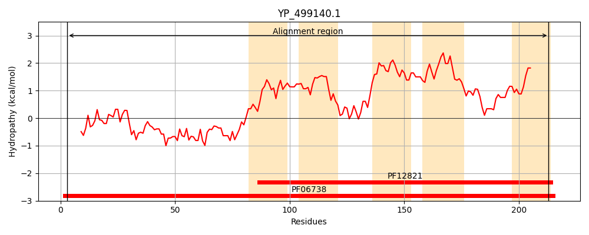
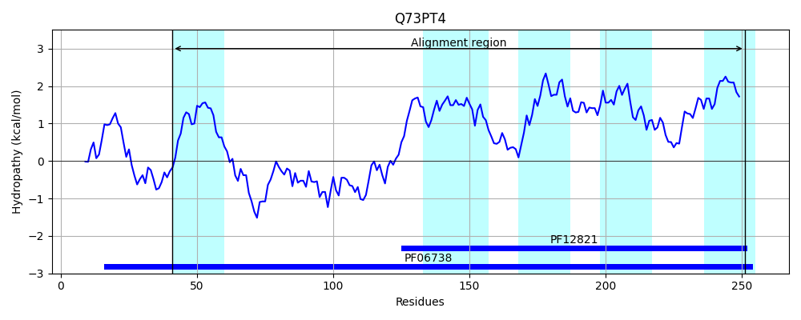
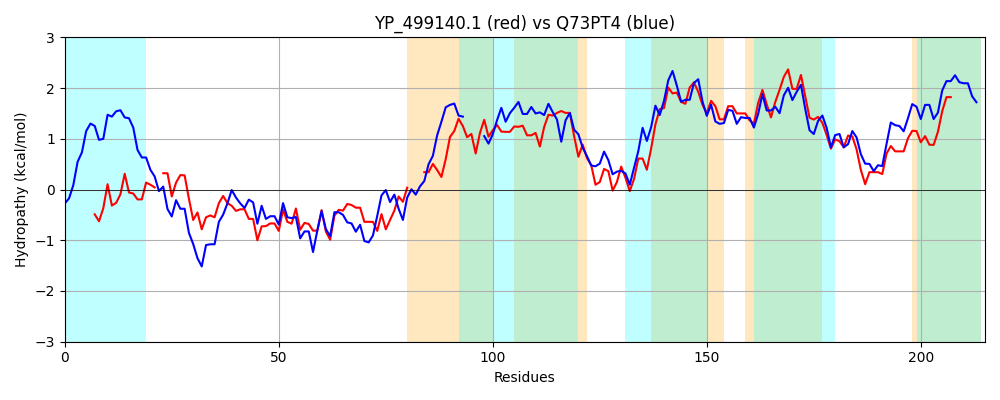

Hit Accession: Q73PT4
Hit TCID: 2.A.79.1.5
Hit Description: gnl|BL_ORD_ID|15260 gnl|TC-DB|Q73PT4|2.A.79.1.5 Membrane protein, putative OS=Treponema denticola (strain ATCC 35405 / CIP 103919 / DSM 14222) GN=TDE_0712 PE=4 SV=1
Mach Len: 215
e:0.000000
Query TMS Count : 5
Hit TMS Count: 5
TMS-Overlap Score: 3.450000
Predicted Substrates:CHEBI:5460;glycine, CHEBI:2539;alanine
BLAST Alignment:
Score: 192 , Bit scores: 78 bits, E-value: 1.1e-17, Alignment length: 215, Percentage identity: 30
Query: 3 RIAKKLGYSESNSFVTNTVIQF-TLHSESFPRIFRITSRDTNLIKISQANKISRQITNNEISLAEAKTQLEKIYVAKRDSS---LPFKGFAAAMIAMSFLYLQGGRLIDVLTAILAGSLGYLVTEILDRKLHAQFIPEFIGSLVIGIIAVIGHTLIPTGDLATIIIAAVMPIVPGVLITNAIQDLFGGHMLMFTTKSLEALVTAFGIGAGVGSVL 213
RI G + F+T TVI E I I R +N+ KIS N+ SR T +IS EA L+ I K L G + F L GG L D + +A + + + + F+ FI +GII ++ + + +L II+ AV+ +VPGV T+ I+D G ++ ++ EA++ A I G+GSVL
Sbjct: 41 RICSSHGITGLAVFITPTVILIGNDKKEGSTYIKNIKVRGSNIHKISLVNEFSRNFTQGKISENEALEILKNIDAEKNYPYWLVLTTSGIGCGL----FSVLLGGTLNDFIVTFIATFAAVFLNDRITQFSKTVFLGNFIAGFFVGIITILFYHIGFVKNLDMIIVGAVLSLVPGVAFTSGIRDFILGDLVSGIARTSEAVLIAVAIAFGIGSVL 251 | Protein Hydropathy Plots: |
|---|
|  |  |
Pairwise Alignment-Hydropathy Plot:
|
|---|
|  |